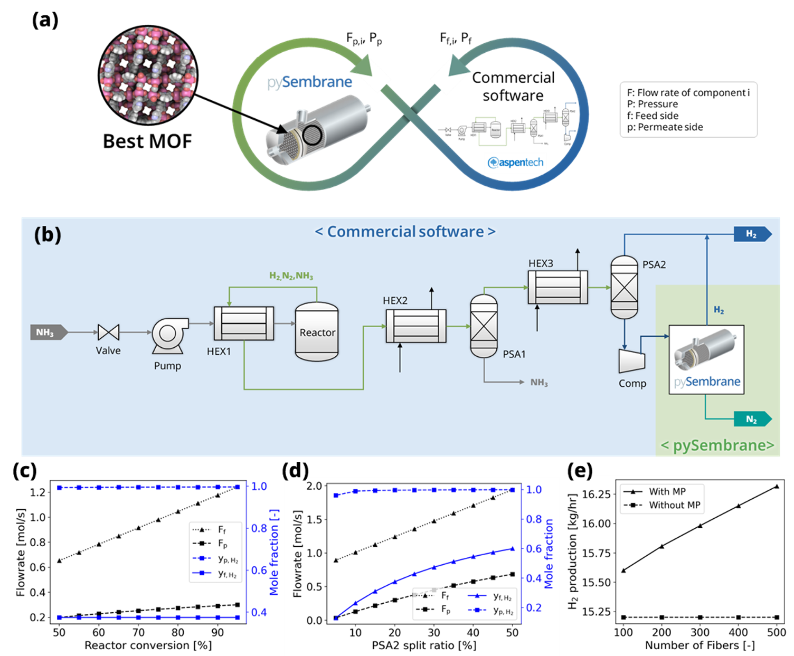
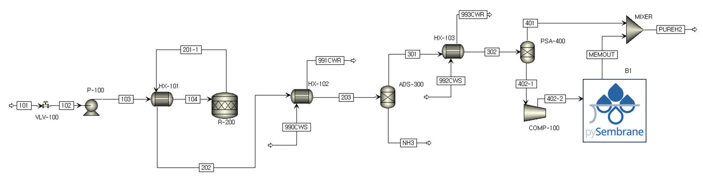

Example 3: Integrated process simulations with other processes for process level evaluation
Example description
In the last example, the process model is developed including the green NH$_3$ decomposition and H$_2$ purification, and the plant scale analysis is conducted for the selected optimal MOF membrane, integrating with the membrane process module. As shown in Figure ref{fig:Casestudy3}(a), the processes, excluding the membrane process module, were developed using commercial software, Aspen Plus cite{lee2023carbon}, while the membrane process module was modeled using the pySembrane. The integration between the two software tools took place in the Python environment, and each process model exchanged stream flow and pressure results to perform simulations. Figure ref{fig:Casestudy3}(b) illustrates the integrated process, and each software is highlighted in blue and green, respectively. The entire process involves the decomposition of transported green NH$_3$ in the reactor, separation of unreacted NH$_3$ in the pressure swing adsorption process (PSA1), and hydrogen production in the PSA2 unit. The stream produced at the bottom of PSA2 contains a significant amount of hydrogen, necessitating additional separation processes to increase the H$_2$ production. Using pySembrane, the outlet stream of the compressor unit (Comp) is set as the feed for membrane process simulation, and the results are then utilized as input variables in Aspen Plus to determine the total production rate of H$_2$.
{kind=link}
Plant model devlopment
The plant model developed by commercial software and the membrane separation model developed by pySembrane are integrated. Figure ref{fig:Casestudy3ProcessModel} shows the entire process of decomposing green NH$_3$ and producing green H$_2$ by separating H$_2$ and N$_2$. The process model was simulated using Aspen Plus V14.0 with the Peng-Robinson fluid package for the thermodynamic model. Stream 101, the green NH$_3$ feedstock, is first decompressed via a valve (VLV-100) and subsequently pressurized to 8.5 bar using a pump (P-100). This feed stream is then heated to 100 textcelsius in the heat exchanger (HX-101) before entering the NH$_3$ decomposition reactor (R-200). Through the reactor, green NH$_3$ is converted to H$_2$ and N$_2$, and a high-temperature H$_2$/N$_2$ mixture stream containing unreacted NH$_3$ is used as a hot stream of the heat exchanger (HX-100) for feed heating, which is then cooled to 105 textcelsius. The reactor outlet stream repeats the cooling and separation process to produce the final product, H$_2$. Initially, unreacted NH$_3$ is removed in the pressure swing adsorption process (ADS-300) after cooling to 40 textcelsius in a heat exchanger (HX-102) using cooling water. The H$_2$/N$_2$ mixture gas produced by the raffinate flow of the PSA process goes through the second PSA process (PSA-400) to produce high-purity H$_2$. Since the tail gas produced in PSA-400 still contains a large amount of H$_2$, additional H$_2$ is produced through the membrane-based separation process after being pressurized by a compressor (COMP-100) to increase production. Table ref{tab:ProcessSpecification} and ref{tab:StreamResults} list the detailed specifications of each unit and stream and the simulation results for each stream, respectively.
{kind=link}
Model |
Specification |
|---|---|
VLV-100 |
Adiabatic flash |
Pressure: 6bar |
|
P-100 |
Pressure increase: 250kPa |
Pump efficiency: 75% |
|
HX-101 |
Cold stream outlet temperature: 100C |
R-200 |
Reaction: 2NH3->3H2+N2 |
Temperature: 600C |
|
Fraction of conversion:0.9 |
|
Pressure: 8.5bar |
|
HX-102 |
Cooling water inlet temperature: 15C |
Hot stream outlet temperature: 40C |
|
ADS-300 |
Split fraction of H2,N2,O2 and H2O: 1 |
HX-103 |
Cooling water inlet temperature: 15C |
Hot stream outlet temperature: 40C |
|
PSA-400 |
Split fraction of H2: 0.8 |
COMP-100 |
Pressure: 11.15bar |
Compressor efficiency: 0.75 |
Results analysis
Figure ref{fig:Casestudy3}(c–d) presents the simulation results corresponding to the conversion rate of the NH$_3$ decomposition reactor and the ratio split to the bottom in the PSA2 unit. F$_f$ and y$_f$ represent the flow rate and composition of the feed entering the membrane module, respectively, and F$_p$ and y$_p$ denote the flow rate and composition of the permeate side produced in the membrane process. As shown in Figure ref{fig:Casestudy3}(c), with an increase in the conversion rate of the NH$_3$ decomposition reactor, the flow rates of N$_2$ and H$_2$ increase, leading to an increase in the feed flow rate of the module. Consequently, flow rates and H$_2$ purity on the permeate side increased. Figure ref{fig:Casestudy3}(d) illustrates the PSA2 split ratio, which represents the ratio of the flow rate entering the membrane process to the total flow rate produced in the PSA2 unit, as it increases, indicating an increase in both the feed flow rate and composition. As a result, the H$_2$ production on the permeate side is increased, with the purity of H$_2$ showing a tendency to increase significantly. Figure ref{fig:Casestudy3}(e) compares the total production of H$_2$ according to the number of fibers in the membrane process module, depending on the presence of the membrane process (MP). Without a membrane process, the production rate is low at 15.2 kg/hr, but with additional H$_2$ production from the stream discarded by the membrane process, the overall production of H$_2$ significantly increases. Moreover, as the number of fibers in the module increases, the H$_2$ production rate increases significantly, contributing to the overall productivity of the process. This example allows for the analysis of the impact of operating conditions in upstream processes on the membrane process and the influence of membrane process conditions on the overall process.
Source code
First, import the necessary libraries required to solve the example. Then, run Aspen Plus to open the example file and define each stream and unit block.
### Load process model ###
import os
import win32com.client as win32
import numpy as np
import matplotlib.pyplot as plt
import pandas as pd
from simulator import *
filename = 'Casestudy/GreenNH3.apw'
sim = win32.Dispatch("Apwn.Document")
sim.InitFromArchive2(os.path.abspath(filename))
sim.Visible = True
MyBlocks = sim.Tree.Elements("Data").Elements("Blocks")
MyStreams = sim.Tree. Elements("Data").Elements("Streams")
ProcOut = MyStreams.Elements("402-2").Elements("Output")
Define the parameters needed for the membrane process simulation. However, the operating conditions of membrane process are determined by the results of stream 402-2 within the Aspen Plus model, so these results are imported.
### Module design ###
n_component = 2 # number of gas components
config = 'COFS' # module configuration
L = 0.6*1e3 # fiber length (mm)
D_module = 0.3*1e3 # Module diameter (mm)
N_fiber = 100 # number of fiber (-)
N = 100 # number of nodes (-)
### Membrane property ###
D_inner = 100*1e-1 # Membrane inner diameter (mm)
D_outer = 250*1e-1 # Membrane outer diameter (mm)
### Gas property ###
Mw_i = np.array([2e-3, 28e-3]) # molar weight (kg/mol)
rho_i = np.array([0.08988, 1.1606])*1e-9 # density (kg/mm3)
mu_i = np.array([0.94e-3, 1.89e-3]) # viscosity (Pa s)
### Mass transfer property ###
k_mass = 1e-1 # Mass transfer coeff. (mm/s)
# Load Asepn results (Operating conditions)
P_feed = ProcOut.Elements("PRES_OUT").Elements("MIXED").Value # pressure of feed side (bar)
T = ProcOut.Elements("RES_TEMP").Value + 273.15
F_feed = ProcOut.Elements("RES_MOLEFLOW").Value/60/60*1e3
x_H2 = ProcOut.Elements("MOLEFRAC").Elements("MIXED").Elements("HYDRO-01").Value
x_N2 = ProcOut.Elements("MOLEFRAC").Elements("MIXED").Elements("NITRO-01").Value
y_feed = np.array([x_H2, x_N2]) # mole fraction (H2, N2)
Load the membrane properties of the best MOF determined from a previous example from an Excel file, and then conduct the membrane process simulation.
data = pd.read_csv('240221_Casestudy2_results.csv')
best_mof = data.sort_values(by='LCOH_opt').iloc[0,:]
a_H2, a_N2 = best_mof[['a_H2(mol/(mm^2 bar s))', 'a_N2(mol/(mm^2 bar s))']]
a_perm = np.array([a_H2, a_N2])
mem = MembraneProc(config, L, D_module, N_fiber,
n_component, n_node = N)
mem.membrane_info(a_perm, D_inner, D_outer)
mem.gas_prop_info(Mw_i, mu_i, rho_i)
mem.mass_trans_info(k_mass)
mem.boundaryC_info(y_feed, P_feed, F_feed, T)
mem.initialC_info()
res = mem.run_mem(cp=False, cp_cond = [1, 298])
err = mem.MassBalance()
mem.PlotResults()
Utilize the results of the membrane process simulation as input for the MEMOUT stream in the plant model. Enter the flow rate for each component, temperature, and pressure, then run the Aspen Plus file. This calculates the additional H$_2$ production through the membrane module to derive the total H$_2$ production.
### Process integration ###
MemOut = MyStreams.Elements("MEMOUT").Elements("Input")
MemOut.Elements("FLOW").Elements("MIXED").Elements("HYDRO-01").Value = res[-1,2]*60*60*1e-3
MemOut.Elements("FLOW").Elements("MIXED").Elements("NITRO-01").Value = res[-1,3]*60*60*1e-3
MemOut.Elements("TEMP").Elements("MIXED").Value = T
MemOut.Elements("PRES").Elements("MIXED").Value = res[-1,-1]
sim.Run2()
sim.Save()
PureH2 = MyStreams.Elements("PUREH2").ElementS("Output").ElementS("RES_MASSFLOW").Value
print("Total H2 production: ", PureH2, "kg/hr")
Perform sensitivity analysis to analyze the impact of various process variables. Below, a loop repeatedly simulates the process models as the NH3 conversion rate in the NH$_3$ decomposition reactor (R-200) changes from 50 to 95%.
### Sensitivity analysis ###
## Sensitivity analysis
conv_list = np.linspace(0.5, 0.95, 10)
H2_prod = []
for _conv in conv_list:
Rxr = MyBlocks.Elements("R-200").Elements("Input").Elements("CONV").Elements("1")
Rxr.Value = _conv
sim.Run2()
sim.Save()
# Operating conditions
P_feed = ProcOut.Elements("PRES_OUT").Elements("MIXED").Value # pressure of feed side (bar)
T = ProcOut.Elements("RES_TEMP").Value + 273.15
F_feed = ProcOut.Elements("RES_MOLEFLOW").Value/60/60*1e3
x_H2 = ProcOut.Elements("MOLEFRAC").Elements("MIXED").Elements("HYDRO-01").Value
x_N2 = ProcOut.Elements("MOLEFRAC").Elements("MIXED").Elements("NITRO-01").Value
y_feed = np.array([x_H2, x_N2]) # mole fraction (H2, N2)
Ff_z0_init = list(y_feed*F_feed)
mem.boundaryC_info(y_feed, P_feed, F_feed, T)
mem.initialC_info()
res = mem.run_mem(cp=False, cp_cond = [1, 298])
err = mem.MassBalance()
MemOut = MyStreams.Elements("MEMOUT").Elements("Input")
MemOut.Elements("FLOW").Elements("MIXED").Elements("HYDRO-01").Value = res[-1,2]*60*60*1e-3
MemOut.Elements("FLOW").Elements("MIXED").Elements("NITRO-01").Value = res[-1,3]*60*60*1e-3
MemOut.Elements("TEMP").Elements("MIXED").Value = T-273.15
MemOut.Elements("PRES").Elements("MIXED").Value = res[-1,-1]
sim.Run2()
sim.Save()
PureH2 = MyStreams.Elements("PUREH2").ElementS("Output").ElementS("RES_MASSFLOW").Value
H2_prod.append([F_feed, x_H2, x_N2, res[-1,0], res[-1,1], res[-1,2], res[-1,3], PureH2])
Below is the code to plot the flow rate and composition of the feed entering the membrane module and the flow rate and composition of the permeate side produced as reactor conversion changes, yielding Figure 6(c) upon execution.
### Results plot ###
conv_nd = np.array(H2_prod)
fig, ax1= plt.subplots(dpi=200, figsize=(6,4))
line2 = ax1.plot(np.array(conv_list)*100, conv_nd[:,0], marker='^', c='k',
label='F$\mathrm{_{f}}$', linestyle=':')
line7 = ax1.plot(np.array(conv_list)*100, conv_nd[:,5], marker='s', c='k',
label='F$\mathrm{_{p}}$', linestyle='--')
ax1.set_ylabel('Flowrate [mol/s]')
ax2 = ax1.twinx()
line8 = ax2.plot(np.array(conv_list)*100,
conv_nd[:,1],
marker='s', c='b',
label='y$\mathrm{_{f,H_2}}$', linestyle='-')
line6 = ax2.plot(np.array(conv_list)*100,
conv_nd[:,5]/conv_nd[:,5:7].sum(axis=1),
marker='s', c='b',
label='y$\mathrm{_{p,H_2}}$', linestyle='--')
ax2.set_ylabel('Mole fraction [-]')
ax2.yaxis.label.set_color('b')
ax2.spines["right"].set_edgecolor('b')
ax2.tick_params(axis='y', colors='b')
plots = line2+line7+ line6+line8
labels = [l.get_label() for l in plots]
ax1.legend(plots, labels, loc='center right', fontsize=14)
ax1.set_xlabel('Reactor conversion [%]')
plt.tight_layout()
plt.show()
Below is the code for comparing the process performance as the split ratio of the stream produced in the second PSA process (PSA-400), specifically stream 402-1, changes from 50 to 95%. The split ratio is adjusted and the simulation is repeated through a loop, with the results being saved.
## Sensitivity analysis
split_list = np.linspace(0.5, 0.95, 10)
split_res = []
for _split in split_list:
Rxr = MyBlocks.Elements("PSA-400").Elements("Input").Elements("FRACS").Elements("401").Elements("MIXED").Elements("HYDRO-01")
Rxr.Value = _split
sim.Run2()
sim.Save()
# Operating conditions
P_feed = ProcOut.Elements("PRES_OUT").Elements("MIXED").Value # pressure of feed side (bar)
T = ProcOut.Elements("RES_TEMP").Value + 273.15
F_feed = ProcOut.Elements("RES_MOLEFLOW").Value/60/60*1e3
x_H2 = ProcOut.Elements("MOLEFRAC").Elements("MIXED").Elements("HYDRO-01").Value
x_N2 = ProcOut.Elements("MOLEFRAC").Elements("MIXED").Elements("NITRO-01").Value
y_feed = np.array([x_H2, x_N2]) # mole fraction (H2, N2)
Ff_z0_init = list(y_feed*F_feed)
mem.boundaryC_info(y_feed, P_feed, F_feed, T)
mem.initialC_info()
res = mem.run_mem(cp=False, cp_cond = [1, 298])
err = mem.MassBalance()
MemOut = MyStreams.Elements("MEMOUT").Elements("Input")
MemOut.Elements("FLOW").Elements("MIXED").Elements("HYDRO-01").Value = res[-1,2]*60*60*1e-3
MemOut.Elements("FLOW").Elements("MIXED").Elements("NITRO-01").Value = res[-1,3]*60*60*1e-3
MemOut.Elements("TEMP").Elements("MIXED").Value = T-273.15
MemOut.Elements("PRES").Elements("MIXED").Value = res[-1,-1]
sim.Run2()
sim.Save()
PureH2 = MyStreams.Elements("PUREH2").ElementS("Output").ElementS("RES_MASSFLOW").Value
split_res.append([F_feed, x_H2, x_N2, res[-1,0], res[-1,1], res[-1,2], res[-1,3], PureH2])
Below is the code for visualizing the flow rate and composition of the feed entering the membrane module and the flow rate and composition of the permeate side produced as the PSA process’s split ratio changes, yielding Figure 6(d) upon execution.
split_nd = np.array(split_res)
fig, ax1= plt.subplots(dpi=200, figsize=(6,4))
line2 = ax1.plot(100-np.array(split_list)*100, split_nd[:,0], marker='^', c='k',
label='F$\mathrm{_{f}}$', linestyle=':')
line7 = ax1.plot(100-np.array(split_list)*100, split_nd[:,5], marker='s', c='k',
label='F$\mathrm{_{p}}$', linestyle='--')
ax1.set_ylabel('Flowrate [mol/s]')
ax2 = ax1.twinx()
line3 = ax2.plot(100-np.array(split_list)*100, split_nd[:,1], marker='^', c='b',
label='y$\mathrm{_{f,H_2}}$', )
line6 = ax2.plot(100-np.array(split_list)*100,
split_nd[:,5]/split_nd[:,5:7].sum(axis=1),
marker='s', c='b',
label='y$\mathrm{_{p,H_2}}$', linestyle='--')
ax2.set_ylabel('Mole fraction')
ax2.yaxis.label.set_color('b')
ax2.spines["right"].set_edgecolor('b')
ax2.tick_params(axis='y', colors='b')
plots = line2+line7+ line3+line6
labels = [l.get_label() for l in plots]
ax2.legend(plots, labels, loc='lower right', fontsize=14, ncol=2)
ax1.set_xlabel('PSA2 split ratio [%]' )
plt.tight_layout()
plt.show()
Below is the code to analyze the variation in H$_2$ production as the number of fibers in the membrane process changes. Through a loop, the process performance can be analyzed as the number of fibers changes from 100 to 500.
## Sensitivity analysis
nnn_list = np.linspace(100, 500, 5)
H2_prod = []
for nnn in nnn_list:
Rxr = MyBlocks.Elements("R-200").Elements("Input").Elements("CONV").Elements("1")
Rxr.Value = 0.9
sim.Run2()
sim.Save()
# Operating conditions
P_feed = ProcOut.Elements("PRES_OUT").Elements("MIXED").Value # pressure of feed side (bar)
T = ProcOut.Elements("RES_TEMP").Value + 273.15
F_feed = ProcOut.Elements("RES_MOLEFLOW").Value/60/60*1e3
x_H2 = ProcOut.Elements("MOLEFRAC").Elements("MIXED").Elements("HYDRO-01").Value
x_N2 = ProcOut.Elements("MOLEFRAC").Elements("MIXED").Elements("NITRO-01").Value
y_feed = np.array([x_H2, x_N2]) # mole fraction (H2, N2)
Ff_z0_init = list(y_feed*F_feed)
mem = MembraneProc(config, L, D_module, nnn,
n_component, n_node = N)
mem.membrane_info(a_perm, D_inner, D_outer)
mem.gas_prop_info(Mw_i, mu_i, rho_i)
mem.mass_trans_info(k_mass)
mem.boundaryC_info(y_feed, P_feed, F_feed, T)
mem.initialC_info()
res = mem.run_mem(cp=False, cp_cond = [1, 298])
err = mem.MassBalance()
MemOut = MyStreams.Elements("MEMOUT").Elements("Input")
MemOut.Elements("FLOW").Elements("MIXED").Elements("HYDRO-01").Value = res[-1,2]*60*60*1e-3
MemOut.Elements("FLOW").Elements("MIXED").Elements("NITRO-01").Value = res[-1,3]*60*60*1e-3
MemOut.Elements("TEMP").Elements("MIXED").Value = T-273.15
MemOut.Elements("PRES").Elements("MIXED").Value = res[-1,-1]
sim.Run2()
sim.Save()
PureH2 = MyStreams.Elements("PUREH2").ElementS("Output").ElementS("RES_MASSFLOW").Value
withoutMem = MyStreams.Elements("401").ElementS("Output").ElementS("RES_MASSFLOW").Value
H2_prod.append([F_feed, x_H2, x_N2, res[-1,0], res[-1,1], res[-1,2], res[-1,3], PureH2, withoutMem])
Below is the code to plot the impact of the number of membrane fibers on H$_2$ production, analyzing the production with and without the membrane process (MP) and according to the number of fibers. Executing the code below yields Figure 6(e).
nnn_nd = np.array(H2_prod)
fig, ax1= plt.subplots(dpi=200, figsize=(5,4))
line2 = ax1.plot(np.array(nnn_list), nnn_nd[:,-2], marker='^', c='k',
label='With MP', linestyle='-')
line7 = ax1.plot(np.array(nnn_list), nnn_nd[:,-1], marker='s', c='k',
label='Without MP', linestyle='--')
ax1.set_ylabel('H$\mathrm{_2}$ production [kg/hr]')
plots = line2+line7+ line6+line8
labels = [l.get_label() for l in plots[:2]]
ax1.legend(plots, labels, loc='best', fontsize=14)
ax1.set_xlabel('Number of Fibers [-]')
plt.tight_layout()
plt.show()